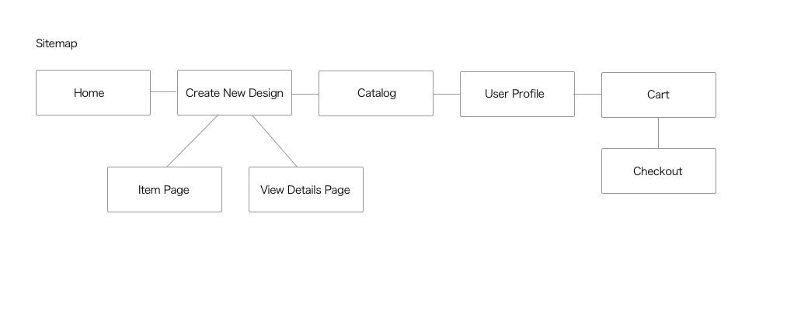
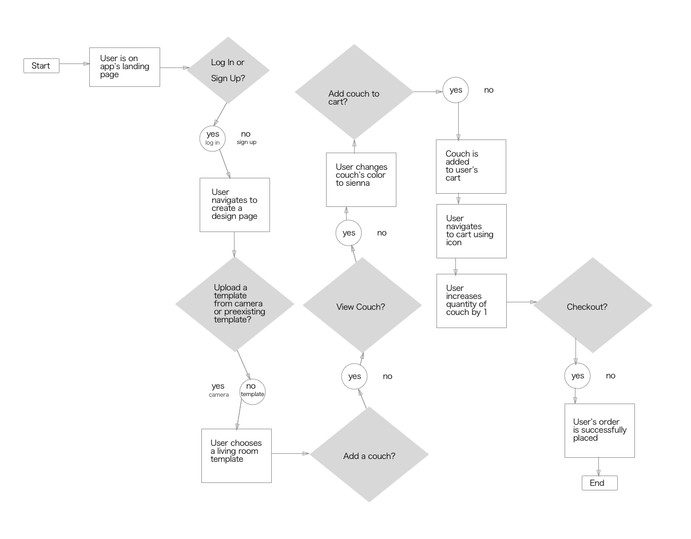
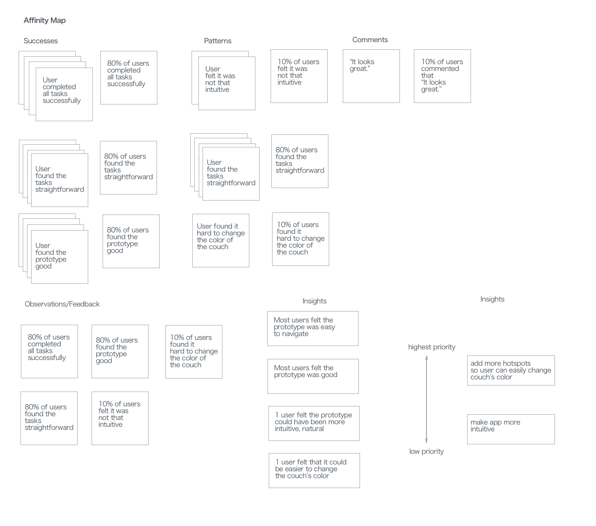

For this project, I built a new interior design/furniture store app that has an AR feature, for a fictional company called Heem. It required 80 hours of research, information architecture, wireframing, prototyping and testing. I interviewed users to find out their furniture shopping habits and interest in an AR feature.
Heem, a new interior design app, wants to allow users to view furniture using AR. They want to give users more ability to view different furniture choices before making purchasing decisions. They want to design a mobile app for this new experience.
Primary Research: gain insights regarding user's needs when choosing furniture and designing rooms in their house with new furniture.
Quantitative Research: determine what furniture choices are most widely sought by users. Determine what rooms to have as options to design are most popularly sought by users.
Market Research : find out what techniques are being employed by top competitors in the field.
Almost all the participants prefer buying furniture from the store versus online, as this gives them the opportunity to see how their furniture will actually look and feel. Almost all participants feel that being able to view furniture in an AR/3D setting would be helpful, but the one participant who doesn’t claims that he wouldn't be able to feel the fabric or see how comfortable it is. Mostly all participants would like to be able to customize furniture choices by color, texture, finish, style & paint while all all would want to customize atleast by color & texture. The kitchen, bedroom, family & living rooms are all popular choices that users would want to design using the AR feature. Contemporary and vintage styles of furniture appeal the most to participants. Before purchasing furniture participants would want to know the dimensions, price, material, brand, quality, see where it was made, customer reviews and whether furniture comes with a warranty.
The sitemap lays out all the pages that will be a part of Heem.
The task flow shows a goal that can be completed using the app, and what the steps to complete this task are.
These are questions which are based on user insights, which help me eventually define product requirements
How might we help users get a better feel of what they are getting before they buy it?Here is an affinity map which shows the results of my usability testing, and helps me understand what I need to improve on my prototype.
Here is my final prototype.